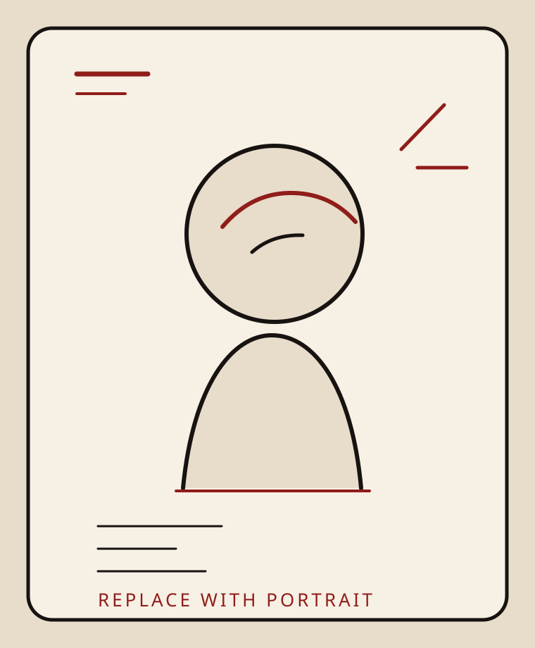

Education
B.A. candidate in Creative Writing and Philosophy at the University of Louisville, graduating April 2026 with a 3.85 GPA.

Louisville, Kentucky
Natalie H. Mudd is a University of Louisville writer whose work moves between literary practice, educational advocacy, and community-based research.
She studies creative writing and philosophy, and brings the same close attention to language into editorial work, tutoring, event planning, and public-facing programs for students.
Her recent work includes verse editing for Miracle Monocle, one-on-one academic tutoring for student athletes, funding and outreach writing for Fostering Attainment Through Educational Supports, and photo essay writing for the Ripple Effects Project.
Across those roles, her focus stays consistent: careful writing, thoughtful collaboration, and projects that connect literature to real communities.
Selected Highlights
B.A. candidate in Creative Writing and Philosophy at the University of Louisville, graduating April 2026 with a 3.85 GPA.
Miracle Monocle verse editor, Ripple Effects project writer, and recipient of the Leon Driskell Writing Grant for a novella-length creative nonfiction project.
President of Fostering Academic Resilience Scholars and presenter on foster youth pathways to higher education at the National Conference for Hidden Student Populations.